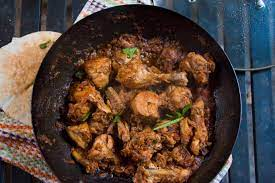

Chicken karahi, or kadai chicken, is a chicken dish from South Asia. It is noted for its spicy taste and is notable in Pakistani and North Indian cuisine. The dish is prepared in a karahi and can take between 30 and 50 minutes to prepare and cook the dish.
